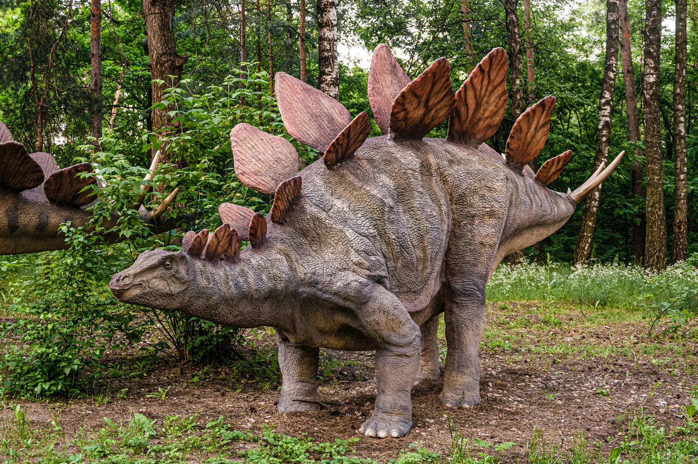

Археоптерикс
Джерело фото: National History Museum
Археоптерикс був невеликим динозавром, схожим на птаха. Він жив у пізньому юрському періоді на території сучасної Європи.
Відкриття першої скам'янілості археоптерикса в Німеччині в 1861 році викликало велике здивування.
До цього часу не було відомо про існування птахів у такому далекому минулому. Деякі люди навіть думали, що це може бути ангел.
З того часу було виявлено багато скам'янілостей археоптерикса. Багато з них мають чіткі ознаки довгих пір'їн.
Але ми не знаємо, чи археоптерикс міг повністю літати, чи тільки плавати в повітрі.
Археоптерикс також має загальну назву — Urvogel, що з німецької означає «первісна птаха».
Автор опису: National History Museum
Алозавр

Джерело фото: US National Park Service
Алозаври були великими і спритними тероподами пізнього юрського періоду. Ці хижі динозаври відрізнялися міцним, мускулистим тілом і великими черепами з гострими зубами і кігтями. Вони були двоногими; ходячи на двох ногах, вони були одними з найсильніших хижаків свого часу. Алозаври, ймовірно, полювали зграями, використовуючи свою швидкість і координацію, щоб здолати велику здобич, таку як зауроподи.
У перекладі з давньогрецької мови назва «алозавр» буквально означає «інша ящірка». Назва походить від двох слів: «allos» — «інший, дивний» і «sauros» — «ящірка».
Автор опису: Animalia
Брахіозавр

Джерело фото: JOE TUCCIARONE
Брахіозаври — це надзвичайно великі та високі динозаври-зауроподи, які за зростом перевершують багатьох хижаків. Спочатку вчені навіть вважали, що брахіозаври були занадто масивними, щоб витримувати вагу своїх тіл на суші, тому більшу частину життя проводили у воді. Але ця теорія була незабаром спростована Джоном Беллом Хатчером.
З давньогрецької мови назва «брахіозавр» перекладається як «ящірка з руками». «Brachion» — «рука», «sauros» — «ящірка».
Автор опису: Animalia
Диплодок
Джерело фото: Extinct Animals
Диплодок — це рід великих чотириногих зауроподів з родини Diplodocidae. Ці динозаври є одними з найбільших наземних тварин, що коли-небудь жили на Землі, і відомі своїми довгими шиями та ще довшими хвостами, схожими на батоги.
Назва «диплодок» походить від двох грецьких слів, які в перекладі означають «diplos — подвійний», «docos — балка». Ця назва прижилася до них через особливі кістки в їхньому хвості.
Автор опису: Animalia
Стегозавр

Джерело фото: Britannica
Стегозаврів легко впізнати завдяки характерним вертикальним пластинам у формі повітряного змія, що вишиковуються вздовж їх спини, та гострим шипам на хвостах — рисам, які виділяють їх серед інших динозаврів.
Назва «стегозавр» складається з двох грецьких слів: «stegos» — «дах» і «sauros» — «ящірка». Тому назва цих динозаврів буквально означає «ящірка з дахом».
Джордж Марш (який знайшов перші скам'янілості стегозавра) спочатку вважав, що останки належали водному тварині, схожій на черепаху.
Тому основою для його наукової назви «ящірка з дахом» було його раннє переконання, що пластини лежали рівно на спині тварини, перекриваючи одна одну, як черепиця на даху.
Автор опису: Animalia